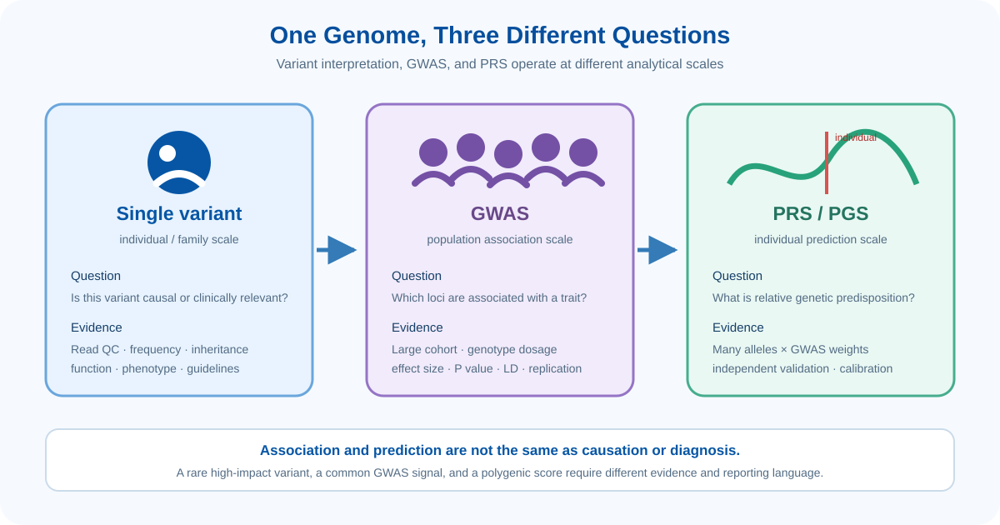
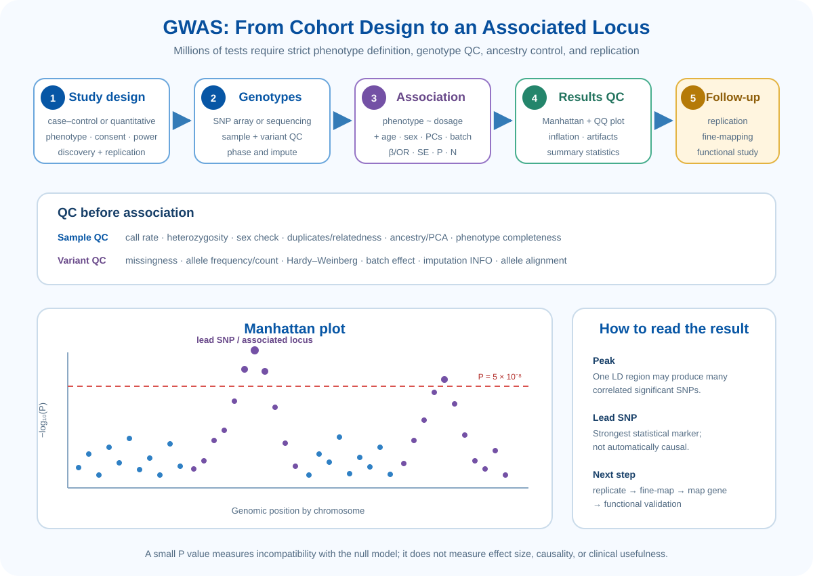
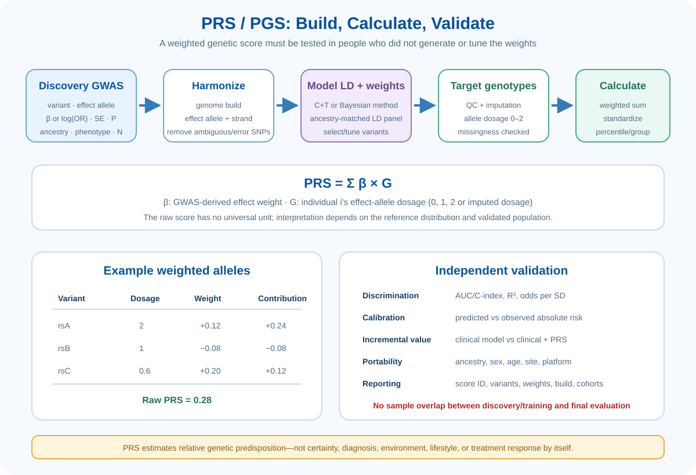
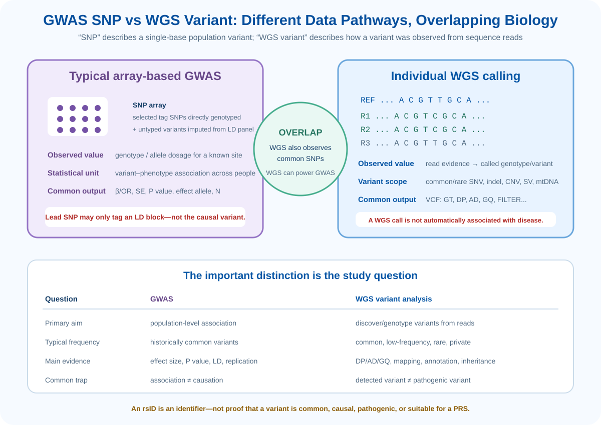

Learning Objectives
- 개별 WGS/WES variant 해석과 population-level GWAS가 답하는 질문을 구분할 수 있다.
- GWAS의 phenotype 설계, genotype QC, imputation, population structure 보정과 association model을 설명할 수 있다.
- Manhattan plot, QQ plot, effect size, P value, lead SNP와 LD locus를 올바르게 해석할 수 있다.
- GWAS summary statistics로 PRS/PGS를 구성하고 독립 cohort에서 검증하는 원리를 이해한다.
- GWAS SNP와 WGS variant의 차이와 중복관계를 설명할 수 있다.
- Association, causation, prediction, diagnosis와 clinical utility를 구분할 수 있다.
Analysis Scales: 같은 genome을 보는 세 가지 관점
Genetic study는 모두 DNA variation을 다루지만 분석 단위가 다릅니다. WGS/WES에서 찾은 한 변이는 개인이나 가족에서 병원성을 평가할 수 있고, GWAS는 많은 사람을 비교하여 phenotype과 연관된 locus를 찾으며, PRS는 다수 variant의 작은 효과를 한 개인의 score로 합산합니다.

Single-Variant Interpretation
Chapter 03에서 얻은 germline 또는 somatic call을 개별적으로 평가하는 단계입니다. 먼저 BAM evidence와 caller filter를 확인한 뒤 population frequency, functional consequence, inheritance, phenotype와 disease-specific evidence를 통합합니다.
| 개념 | 의미 | 혼동하면 안 되는 개념 |
|---|---|---|
| Sample VAF | 한 sample에서 ALT를 지지하는 read 비율 | Population allele frequency |
| Population AF | Population에서 해당 allele이 존재하는 빈도 | 환자 sample의 VAF |
| Functional consequence | Transcript 기준 missense, stop-gain, splice 등의 위치 영향 | Pathogenicity의 확정 |
| Pathogenic variant | 질환 인과성에 대한 충분한 근거가 있는 germline variant | 단순히 rare/deleterious한 variant |
| Somatic driver | Tumor clone에 선택적 이점을 제공하는 alteration | Tumor에서 관찰된 모든 passenger |
| Actionable variant | 진단·예후·치료와 연결할 근거가 있는 alteration | 생물학적으로 흥미로운 모든 variant |
ACMG/AMP와 ClinGen specification을 사용해 population, segregation, functional, phenotype evidence를 통합합니다. VUS는 현재 근거가 부족하다는 뜻이지 “의심되는 pathogenic”의 동의어가 아닙니다.
Cancer type, hotspot, VAF, purity, copy number, clonality와 therapeutic evidence tier를 평가합니다. Driver와 actionable은 겹칠 수 있지만 동일한 개념은 아닙니다.
Genome-Wide Association Study
GWAS는 수많은 사람에서 genome 전반의 marker를 검사하여 disease 또는 quantitative trait와 통계적으로 연관된 variant를 찾는 연구입니다. 전통적으로 SNP array와 imputation을 사용하지만 WGS genotype을 이용한 sequencing-based GWAS도 가능합니다.

1. Phenotype과 cohort 설계
| 설계 | Phenotype | 대표 모델 | 출력 효과크기 |
|---|---|---|---|
| Case–control | Disease yes/no | Logistic regression 또는 mixed model | Log(OR), odds ratio |
| Quantitative trait | 키, 혈압, biomarker 등 연속값 | Linear regression/mixed model | Allele당 phenotype 변화 β |
| Time-to-event | 발병·재발·생존시간 | Cox model 등 | Hazard ratio |
| Meta-analysis | 여러 cohort의 동일/조화 phenotype | Fixed/random-effects 등 | Pooled effect와 heterogeneity |
정확한 phenotype 정의가 genotype 수보다 먼저입니다. Case ascertainment, control의 연령과 follow-up, medication, batch, recruitment site와 exclusion criteria가 불명확하면 큰 sample에서도 bias가 발생합니다. Discovery cohort와 독립 replication cohort를 처음부터 분리하는 것이 좋습니다.
2. Sample-level genotype QC
- Call rate: Genotype가 지나치게 많이 빠진 sample을 확인합니다.
- Heterozygosity: 오염, inbreeding 또는 batch outlier를 탐지합니다.
- Genetic sex: Metadata와 sex-chromosome genotype의 불일치를 확인합니다.
- Relatedness/duplicates: 예상하지 않은 동일인·가족관계를 확인하고 model 또는 sample set을 조정합니다.
- Ancestry/PCA: Genetic ancestry와 population structure를 파악해 confounding을 통제합니다.
- Batch/site: Case와 control이 서로 다른 chip, center 또는 recruitment period에 집중되지 않았는지 확인합니다.
3. Variant-level QC and imputation
- Missingness: Variant call rate와 case/control 간 differential missingness를 확인합니다.
- Allele frequency/count: 너무 희귀하여 single-variant test가 불안정한 marker를 구분합니다.
- Hardy–Weinberg equilibrium: Control에서 예상과 크게 벗어난 marker는 genotyping error 가능성을 확인합니다.
- Strand/allele: A/T, C/G palindromic SNP와 effect allele 방향을 주의합니다.
- Imputation: Reference haplotype panel과 LD를 이용해 array에서 직접 측정하지 않은 genotype dosage를 추정합니다.
- Imputation quality: INFO/R²가 낮은 variant는 association과 PRS에서 제외하거나 민감도 분석합니다.
4. Association model
Binary trait의 logistic model에서 exp(β)는 allele당 odds ratio입니다. Quantitative trait에서 β는 effect allele 한 개당 평균 phenotype 변화입니다. Population structure, relatedness와 case–control imbalance가 크면 mixed model 또는 이에 적합한 방법을 사용합니다.
Reading GWAS Results
| 결과 항목 | 의미 | 해석상 주의 |
|---|---|---|
| Effect allele / other allele | 효과크기가 어떤 allele 방향으로 계산되었는지 표시 | Allele flip이 발생하면 PRS 방향이 반대가 됨 |
| β 또는 OR | 효과의 방향과 크기 | P value가 작아도 효과가 매우 작을 수 있음 |
| SE / confidence interval | 효과 추정의 불확실성 | 표본수가 작거나 rare variant이면 불안정 |
| P value | Null model과 data의 불일치 정도 | 인과성·예측력·임상 중요도를 직접 의미하지 않음 |
| Lead/index SNP | 한 locus에서 가장 강한 association marker | LD 때문에 causal variant의 proxy일 수 있음 |
| QQ plot | 관측 P value와 null expectation 비교 | 초기부터 전체가 상승하면 stratification, relatedness, batch 등을 의심 |
Common-variant GWAS에서는 일반적으로 P < 5×10−8을 genome-wide significance 기준으로 사용합니다. 하지만 study design, variant 수, ancestry 및 rare-variant test에 따라 적절한 multiple-testing 기준은 달라질 수 있습니다.
Peak 하나가 gene 하나를 의미하지 않는다
인접 variant는 linkage disequilibrium(LD) 때문에 함께 유전될 수 있습니다. 따라서 하나의 causal signal이 여러 significant SNP를 만들 수 있고, lead SNP가 intergenic region에 있거나 먼 gene의 enhancer와 연결될 수도 있습니다.
Polygenic Risk Score / Polygenic Score
PGS는 다수 genetic variant의 effect allele dosage에 GWAS-derived weight를 곱해 합산한 값입니다. Disease risk를 대상으로 할 때 PRS라는 용어를 흔히 사용합니다. 한 개의 high-penetrance variant를 찾는 검사가 아니라, 많은 작은 효과를 합쳐 개인의 상대적 genetic predisposition을 정량화합니다.

1. PRS formula
Binary trait에서 β는 보통 log(OR), quantitative trait에서는 allele당 effect estimate입니다. Raw PRS 자체에는 보편적인 단위가 없으므로 target population 안에서 mean/SD, percentile 또는 risk group으로 표준화합니다.
2. Variant와 weight를 어떻게 선택하는가?
| 접근 | 원리 | 장단점 |
|---|---|---|
| Genome-wide significant SNP only | 강한 독립 signal만 합산 | 해석은 단순하지만 polygenic signal을 많이 놓칠 수 있음 |
| Clumping + thresholding | LD가 높은 SNP를 줄이고 여러 P-value threshold를 비교 | 직관적이지만 threshold tuning과 LD reference에 영향 |
| LD-aware Bayesian/shrinkage | Genome-wide effect와 LD를 함께 모델링해 weight를 축소·추정 | 예측력이 좋아질 수 있으나 method, prior, LD panel 의존 |
| Multi-ancestry method | 여러 ancestry GWAS와 LD 정보를 통합 | Portability 향상을 목표로 하나 충분한 diverse data가 필요 |
3. Allele harmonization이 가장 흔한 기술적 함정
- Scoring file과 target genotype의 genome build를 맞춥니다.
- Effect allele과 non-effect allele의 방향을 확인합니다.
- A/T 및 C/G palindromic SNP는 strand와 allele frequency 없이 방향을 결정하기 어려울 수 있습니다.
- Imputation quality와 missing score variant 비율을 보고합니다.
- 사용한 PGS Catalog ID, scoring file version, variant 수와 계산 software를 기록합니다.
4. 독립 validation에서 무엇을 평가하는가?
GWAS SNP and WGS Variant: 무엇이 다른가?
가장 먼저 바로잡아야 할 점은 GWAS SNP와 WGS variant가 완전히 별개의 변이 종류가 아니라는 것입니다. SNP는 single-base 위치에서 population 내 variation을 나타내는 용어이고, WGS는 sequencing read에서 variant를 관측하는 방법입니다. 따라서 WGS 결과에도 common SNP가 포함되며, WGS genotype으로 GWAS를 수행할 수도 있습니다.

| 항목 | 전통적 SNP-array GWAS | 개인 WGS variant analysis |
|---|---|---|
| 주요 목적 | Population에서 genotype–phenotype association 탐색 | 한 sample의 sequence difference를 검출·genotype |
| 원자료 | Probe intensity로 측정한 선택된 SNP genotype | Genome 전체의 sequencing reads |
| 측정되지 않은 위치 | LD reference를 이용해 imputation 가능 | Coverage와 mapping이 충분하면 직접 variant calling |
| 대표 변이 범위 | 주로 common SNP; imputed low-frequency variant 포함 가능 | Common·rare·private SNV, indel, CNV, SV, mtDNA |
| 한 사람의 값 | Allele dosage 또는 genotype probability | GT, DP, AD, GQ와 read-level evidence |
| 주요 통계 | β/OR, SE, P value, LD와 replication | Depth, allele balance, quality, annotation와 inheritance |
| 대표 결과 | Summary statistics, Manhattan/QQ plot, associated locus | VCF/gVCF, annotated variant table |
| 해석 오류 | Associated lead SNP를 causal variant로 단정 | 검출된 rare variant를 pathogenic으로 단정 |
SNP, SNV, variant와 rsID
- Variant: Reference 또는 사람들 사이에서 관찰되는 DNA sequence 차이를 포괄하는 용어입니다.
- SNV: 한 nucleotide 위치의 차이입니다. 개인 variant calling 문맥에서 많이 사용합니다.
- SNP: Population에서 관찰되는 single-nucleotide polymorphism입니다. 역사적으로 common variation과 GWAS marker 문맥에서 많이 사용했지만 용법은 자료마다 다를 수 있습니다.
- rsID: dbSNP의 reference identifier입니다. rsID가 있다고 common, functional, causal 또는 pathogenic이라는 뜻은 아닙니다.
WGS가 GWAS에 추가하는 것
WGS는 array가 직접 측정하지 못하거나 imputation이 어려운 rare SNV/indel, ancestry-specific variant와 일부 structural variant를 포괄할 수 있습니다. 하지만 rare variant는 carrier 수가 적어 variant 하나씩 검사하면 power가 부족합니다. 따라서 gene 또는 functional unit 안의 rare variant를 모으는 burden test, SKAT류의 set-based association이 자주 사용됩니다.
Post-GWAS and Integrated Analysis
Genome-wide significance는 연구의 끝이 아니라 locus를 생물학으로 연결하는 출발점입니다.
| 분석 | 답하려는 질문 | 주의점 |
|---|---|---|
| Conditional analysis | 한 locus에 독립 association signal이 여러 개인가? | Ancestry-matched LD reference 또는 individual data 필요 |
| Fine-mapping | Causal variant를 포함할 가능성이 높은 credible set은? | LD, sample size, ancestry 다양성에 따라 해상도 변화 |
| eQTL colocalization | Trait와 gene expression이 같은 causal signal을 공유하는가? | 단순히 두 peak가 가까운 것과 colocalization은 다름 |
| Functional annotation | Variant가 enhancer, promoter, coding/splicing에 영향을 주는가? | 질환 관련 tissue/cell type context가 중요 |
| Pathway / gene-set | Association이 특정 생물학적 기능에 모이는가? | Gene length, LD와 locus-to-gene mapping bias 고려 |
| Genetic correlation | 두 phenotype이 polygenic architecture를 공유하는가? | Sample overlap과 population mismatch 확인 |
| Mendelian randomization | Genetic instrument를 이용해 exposure의 causal effect를 지지하는가? | Pleiotropy, weak instrument와 핵심 가정 검토 |
Single-variant, GWAS와 PRS 결과를 통합할 때는 서로 다른 effect scale과 evidence level을 유지해야 합니다. 예를 들어 pathogenic monogenic variant와 PRS를 한 숫자로 임의 합산하지 않고, 각각의 검증된 model과 clinical context 안에서 별도로 제시합니다.
Common Interpretation Pitfalls
- Genome-wide significant SNP를 causal variant 또는 가장 가까운 gene의 변이로 단정
- P value가 작은 결과를 큰 effect 또는 높은 예측력으로 해석
- Population structure, relatedness, batch와 case–control imbalance를 충분히 보정하지 않음
- Effect allele과 strand를 확인하지 않고 summary statistics 또는 PRS weight를 결합
- Discovery/training sample이 validation cohort에 포함되어 PRS 성능이 과대평가됨
- 한 ancestry에서 개발한 PRS를 calibration 없이 다른 population에 적용
- 높은 PRS를 질병 확진 또는 필연적인 발병으로 설명
- WGS에서 검출된 rare variant를 frequency가 낮다는 이유만으로 pathogenic으로 판정
- rsID 존재를 common, causal, pathogenic 또는 clinically useful하다는 근거로 사용
References & Further Reading
- NHGRI. Genome-Wide Association Studies Fact Sheet.
- Uffelmann E, et al. Genome-wide association studies. Nature Reviews Methods Primers. 2021.
- NHGRI–EBI. GWAS Catalog.
- GWAS Catalog. GWAS summary statistics standard.
- NHGRI. Human Genomic Variation.
- PGS Catalog. The Polygenic Score Catalog.
- EMBL-EBI Training. Polygenic scores and the PGS Catalog.
- Wand H, et al. Improving reporting standards for polygenic scores in risk prediction studies. Nature. 2021.
- Lewis CM, Vassos E. Polygenic risk scores: from research tools to clinical instruments. Genome Medicine. 2020.
- Wang Y, et al. The clinical application of polygenic risk scores: ACMG points to consider. Genetics in Medicine. 2023.
- ClinGen. Sequence Variant Interpretation Working Group.
- Ensembl. Variant Effect Predictor.
Key Takeaways
- Single-variant interpretation, GWAS와 PRS는 각각 인과성, 집단 연관성, 예측이라는 다른 질문을 다룹니다.
- GWAS의 신뢰도는 phenotype, sample/variant QC, ancestry·relatedness 보정, imputation과 replication에 달려 있습니다.
- Manhattan peak와 lead SNP는 associated locus의 표지이며 causal variant나 gene의 확정이 아닙니다.
- PRS는 GWAS effect weight와 allele dosage의 합이며 독립 cohort에서 discrimination, calibration과 portability를 검증해야 합니다.
- GWAS SNP와 WGS variant는 배타적 범주가 아닙니다. WGS에도 SNP가 있고 WGS genotype으로 GWAS를 수행할 수 있습니다.
- Association ≠ causation, high PRS ≠ diagnosis, rare variant ≠ pathogenic variant입니다.
Check Your Understanding
- GWAS의 lead SNP가 causal variant가 아닐 수 있는 이유를 LD를 이용해 설명해보세요.
- GWAS summary statistics의 β, effect allele, P value는 각각 무엇을 의미하나요?
- PRS 개발 cohort와 최종 평가 cohort가 중복되면 어떤 문제가 발생하나요?
- 높은 AUC를 보이는 PRS가 반드시 좋은 absolute-risk calibration을 갖는 것은 아닌 이유는 무엇인가요?
- Array 기반 GWAS SNP와 WGS에서 검출된 SNV의 공통점과 차이점을 설명해보세요.